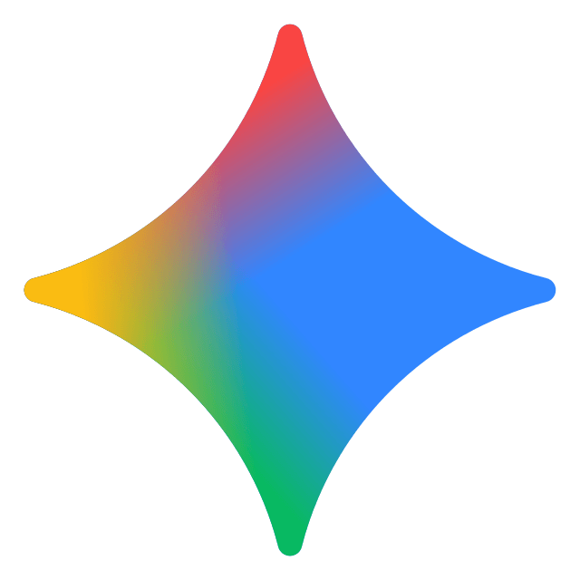
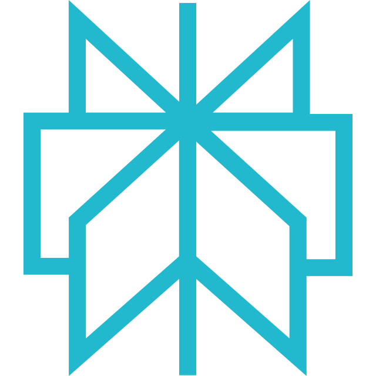
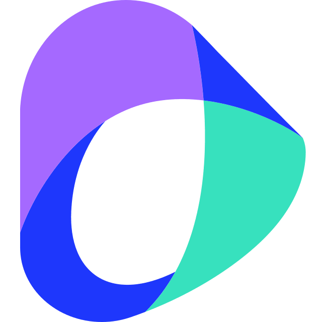
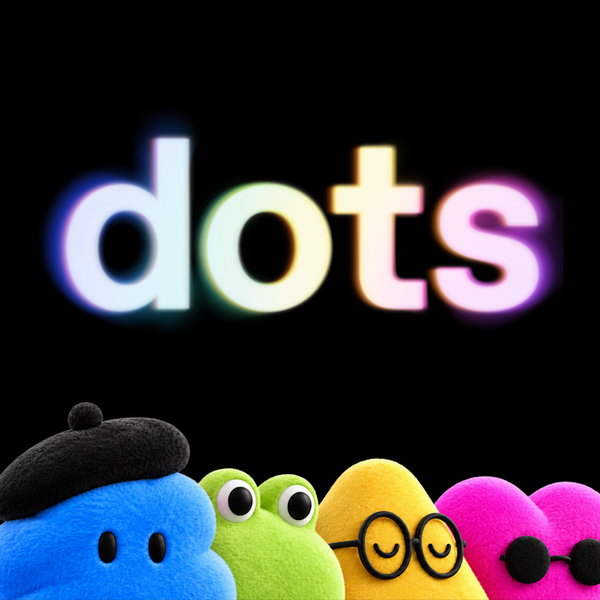

后台要有人
发信息给大家
点按钮、跟进
开场 · 12:00 – 12:20PM
2026-10-18 · 12PM – 4PM · Adrian Ng × Jason Thow

主讲讲师
教中小企业用 AI Agent
网络 IP：阿理哥（Aligor）
你问，它答







ChatGPT Codex ＋ Hermes Agent
安装、建立项目、修改文件
长期工作、连接手机、累积 Skill
Hermes Agent 就是你的 AI 助理。身为一个助理，它记得你的所有事情，而且也会最了解你。